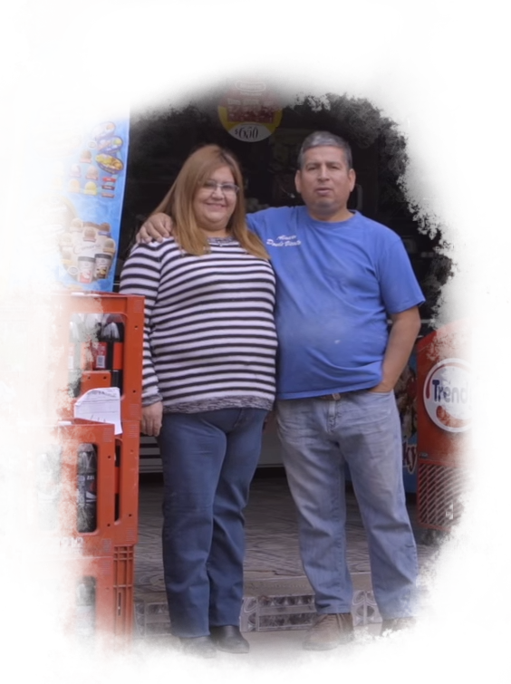

Localizados en Puente Alto, Panadería Pompeyo nace de la necesidad de reinventarnos tras el cierre de nuestro antiguo local "Donde Vicente" ubicado al interior del Barrio España, esto mas la situacion sanitaria actual (Covid-19) decidimos llevar nuestro trabajo mas allá, esta vez a sus hogares. Panadería Pompeyo se enorgullece de ofrecer lo mejor de la panadería y pasteleria tradicional chilena, todo de forma 100% artesanal. Agradecemos a todos los clientes que hemos hecho este año y sobre todo a aquellos que nos acompañan desde nuestro antiguo local, a todos ustedes Muchas Gracias.
-Panadería Pompeyo
NOSOTROS
Un poco de nuestra historia para que nos conozcas.
